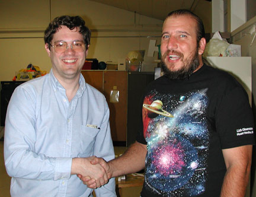
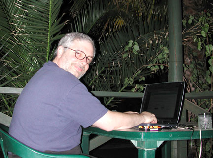

SJAA Ephemeris December 2001 |
SJAA Home |
Contents |
Previous |
Next
SJAA Ephemeris December 2001 |
SJAA Home |
Contents |
Previous |
Next
Photos and Tidbits
The Editors
Robert Naeye (left) accepts congratulations from Bob Havner after a thoroughly enjoyable survey of the Chandra X-Ray Observatory at the November general meeting of SJAA. Robert is editor of Mercury magazine, the publishing arm of the Astronomical Society of the Pacific.
|

|
This is where your Ephemeris editors humbly apologize for any errors, delays, or otherwise disreputable events regarding this month's fishwrap. As you can see, working conditions have been somewhat different from the norm. The Ephemeris is brought to you this month from the heart of the Australian outback, Alice Springs in the Northern Territory. (See the article elsewhere for a diary of our adventures to date.) Thanks to Hewlett and to Packard as well for their excellent laptop computers, to AMD for their truly advanced small devices, and to Telstra for their only moderately annoying internet service.
|

|
Mail to:
Editors
Copyright © 2001 San Jose Astronomical Association
Last updated:
February 05, 2002
Previous | Contents | Next